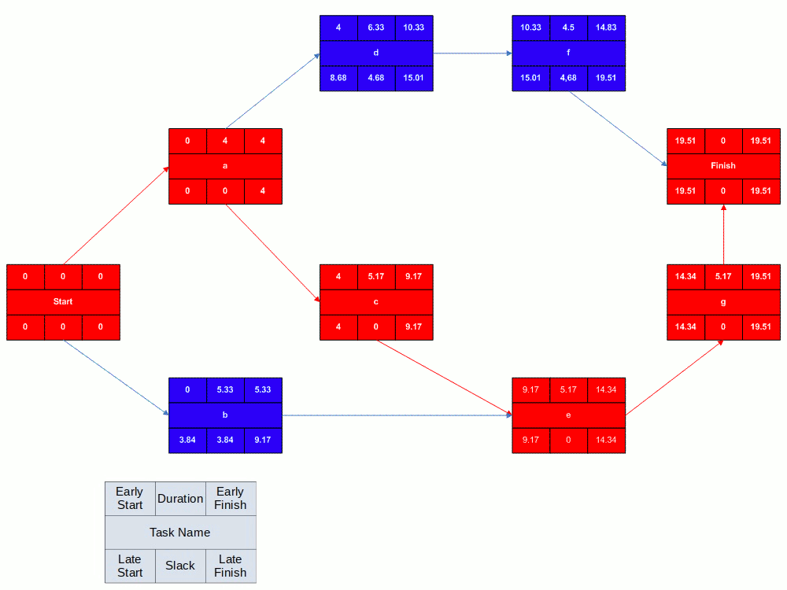

<style>
  figcaption {
    font-size: small;
    padding-top: 8px;
  }
</style>
<aside aria-labelledby="h-abstract">
  <h2 id="h-abstract">Abstract</h2>
  <p>
    In the field of Project Management there are different chart types used to
    analyze a project, such as timelines, PERT charts, and Gantt charts. This
    article provides a solid mathematical basis for describing such charts and
    then uses that to categorize the most common types of charts based on their
    mathematical properties.
  </p>
</aside>

<section>
  <h2>Background</h2>
  <p>
    There are many types of charts used for project planning, but in general
    they display a project as a series of tasks, where the duration of each task
    is displayed as a horizontal bar, where the left hand edge of the task bar
    is aligned with the time at which that task will start. Charts may also
    contain dependencies among the tasks, which can also be displayed on the
    chart.
  </p>
  <p>
    The names for such charts are used inconsistently. For example, Fig 1 is an
    example Gantt chart produced by Microsoft Project.
  </p>
  <figure>
    
    <figcaption>
      <strong>Figure 1.</strong>
      A Gantt chart created using Microsoft Project. The critical path is in
      red, the slack is the black lines connected to non-critical activities.
      <a
        href="https://en.wikipedia.org/wiki/User:Dbsheajr"
        class="extiw"
        title="en:User:Dbsheajr"
        >Dbsheajr</a
      >
      at the
      <a href="https://en.wikipedia.org/wiki/" class="extiw" title="w:"
        >English-language Wikipedia</a
      >,
      <a
        href="http://creativecommons.org/licenses/by-sa/3.0/"
        title="Creative
    Commons Attribution-Share Alike 3.0"
        >CC BY-SA 3.0</a
      >,
      <a href="https://commons.wikimedia.org/w/index.php?curid=77392062"
        >Link</a
      >
    </figcaption>
  </figure>

  <p>
    Other Gantt charts lack dependencies between the tasks being tracked, like
    in the spreadsheet based chart in Fig. 2.
  </p>

  <figure>
    
    <figcaption>
      <strong>Figure 2.</strong>
      The <q>Basic Gantt Chart Template</q> in Google Sheets as provided by
      SmartSheet.
      <a
        href="https://docs.google.com/spreadsheets/d/1jERZMnzW27ZbzLQGzNdIKl0E8QOumXOPeb0CgQ_Y4GE/edit?usp=sharing"
        >Link</a
      >
    </figcaption>
  </figure>

  <p>
    Finally there are PERT charts that don't use the bar presentation and
    instead present a network diagram of task dependencies.
  </p>

  <figure>
    
    <figcaption>
      <strong>Figure 3.</strong>
      A completed PERT network diagram created using Microsoft Visio. Note the
      critical path is in red.
      <a
        href="http://creativecommons.org/licenses/by-sa/3.0/"
        title="Creative Commons Attribution-Share Alike 3.0"
        >CC BY-SA 3.0</a
      >,
      <a href="https://commons.wikimedia.org/w/index.php?curid=4095461">Link</a>
    </figcaption>
  </figure>
</section>

<section>
  <h2>Defining Characteristics</h2>
  <section>
    <h3>Timelines</h3>
  </section>
  <section>
    <h3>Gantt Charts</h3>
  </section>
  <section>
    <h3>PERT Charts</h3>
    <p>We know these are directed acyclic graphs.</p>
  </section>
  <section>
    <h3>Critical Path Method</h3>
  </section>
</section>

<section>
  <h2>Basic Graph Theory</h2>
  <section>
    <h3>Graphs</h3>
    <dl>
      <dd>$$ G=(V,E) $$</dd>
    </dl>
  </section>
  <section>
    <h3>Weighted Graphs</h3>
  </section>
  <section>
    <h3>Directed-Acyclic Graphs</h3>
  </section>
  <section>
    <h3>Graph Algorithms</h3>
  </section>
</section>

<section>
  <h2>Chart</h2>
  <p>
    A chart is a tuple consisting of an ordered list of Tasks and then a set of
    Relations between Tasks. In the nomenclature of Graph Theory, the Tasks will
    be the vertexes and the Relations will be the edges in the graph.
  </p>
  <section>
    <h3>Definitions</h3>
    <dl>
      <dt>A chart is a tuple of Tasks and Relations.</dt>
      <dd>$$ C=(T,R) $$</dd>
      <dt>
        Tasks is an ordered list of Tasks. Note that this is different from the
        basic definition of a Graph where the vertexes are just a set and don't
        have any specific ordering. The ordering here allows algorithms run over
        the chart to be deterministic, and can also be used when displaying
        charts.
      </dt>
      <dd>$$ T=[T_0, T_1, T_2, ...] $$</dd>
      <dt>Each Task has a duration:</dt>
      <dd>$$ T_{i}.d $$</dd>
      <dt>Relations is a list of Relations.</dt>
      <dd>$$ R=[R_0, R_1, R_2, ...] $$</dd>
      <dt>
        Where each Relation is a tuple, where i and j are indexes into the Task
        list, and a,b and l are arguments to the expression that determines one
        constraint on the start time of \( T_j \).
      </dt>
      <dd>
        $$ R_k=\{(i, j, a, b, l) \mid i, j \in ℕ \; {\textrm {and}} \; a, b \in
        \{0,1\} \; {\textrm {and}} \; l \in ℝ \}$$
      </dd>
      <dt>The start constraint formula is below.</dt>
      <dd>
        $$ {\textrm {start_constraint}}(R_k) = \textrm{start}(i) + a * T_{i}.d -
        b * T_{j}.d + l $$
      </dd>
      <dt>Note that a Task \( T_i \) may have multiple predecessors</dt>
      <dd>$$ \textrm{Pred}(T_i) = \{ R_k \mid R_k.j == i \} $$</dd>
      <dt>
        The start of \(T_i\) is the maximum of all of \(T_i\)'s start
        constraints.
      </dt>
      <dd>
        $$ \textrm{start}(i) = \max \{ \textrm {start_constraint}(R_k) \mid R_k
        \in \textrm{Pred}(T_i) \} $$
      </dd>
    </dl>
  </section>
  <section>
    <h3>Categorization</h3>
    <p>
      Show how the definition covers all the examples given in Defining
      Characteristics, and the mathematical differences between the categories.
    </p>
  </section>
  <section>
    <h3>Algorithms</h3>
  </section>
</section>
